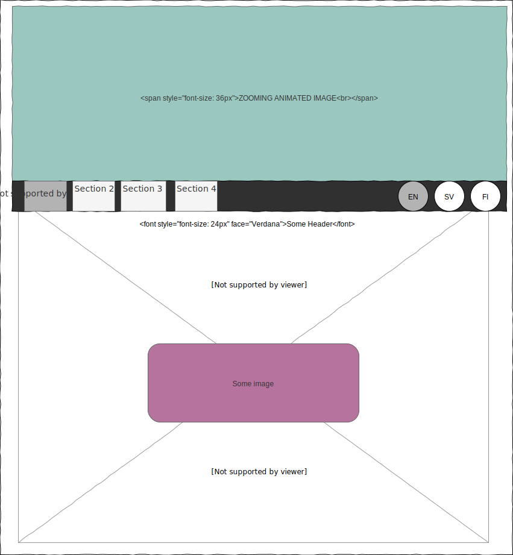

The first thing I asked myself is why I would make a webpage, if not for a contract then the first webpage would be to promote myself for future customers. The impression would foremost professional, this usually involves a very simple font (a sans-serif styled font), loads of clean space and a simple layout with easy colors like blacks and whites.
I knew from the start that my number 1 goal would be a navigation that followed you throughout all the page. A simple one that worked on all platforms with that important home button. I knew how difficult that can be, any sub menus or mouseover effects that are amazing on a desktop can be so frustrating on most mobile platforms. This also meant figuring out how many pages my website would be, originally the idea was to have rather many pages, but I realized that having many pages might just overwhelm the user and it did not really serve any purpose since I’d be unable to showoff my number 1 goal, that sticky navigation. Instead I got another idea.
An idea to have the webpage in multiple languages. This would create a great selling point for myself, however that would mean making the site in English first and translating it later. Estimating the project to be due by Christmas it would leave plenty of time to learn the necessary Finnish in time, an estimation that was wildly wrong.
My first draft was rather straight forward. A logo, a side navigation that had to follow as you scrolled, then a main content body with header and images with some padding of white space. With this I set out on the internet, looking how to accomplish this all the while thinking that I need to somehow make a logo that I am happy with while not stealing one from something I like.
Have you ever laid eyes upon something and instantly known, I need this in my life? That's what happened for me when I saw a webpage cut in half with a smoothly animated image on top.
My goal changed, the sticky navigation was now my 2nd goal and an animated header image, with that zoom effect became my number 1 goal. That meant rethinking the whole layout and a lot of work that I had yet to discover but atleast I could totally scrap my logo since it would just distract from the amazing animated image.
Now it was time to head into VSC, get that amazing live preview plugin and start trying to see what would make it or break it. The plan was to make the home page working and from there copy and paste most of the settings and finnish the project.
Let us start with the elephant, that animated header, so much pain, so much learnt. The idea, some keyframes to make it transform seemed simple enough. I read the code where I found it, tried putting it in the way I knew and unbelievably it worked so I leant back and slowly I started seeing my whole page being covered by my supplementary image. I tried over and over before eventually just leaving it as a static image, telling myself I’d deal with it later, after I had done the main design. This is fully comparable to mopping your dirt under the rag for this mistake would haunt me later.
Sticky navigation was fairly straight forward, the resources at w3.schools showed me what I needed and I even got to fiddle with some JS, this was a really great experience for it tied in with our course in Java programming. I could recognize some commands and the logic behind it felt familiar.
I then started to work on the main body contents and at this time the hot topic in school was making it responsive with grid-what-a-not or flex-box-one and port-in-the-view-thingy. Back again at w3.schools I can honestly say I understood nothing, div this and div that 12 columns and 12 rows here, why would anyone need all these classes, can’t I just command my content to stay in the middle but leaving some white fluff, like a word document? I ended up making 4 columns…
Things where looking good, a nice image, navigation bar that was following the page and text content centered with one big white column at either side and when I opened it on my cellphone it made the columns into rows and all the text fitted nicely. But one thing was bothering me or more like wasn’t bothering me, for that top image still wasn’t animated so I went back to the source of inspiration to reread their code.
All that time at w3.schools had done something for things looked so much clearer. Naturally if I transform my element it will grow as it should so if I change depth (z-index) it won’t cover anything and growth will get disguised as a zoom if I just lock the position.
Heureka!
Now why did my image completely vanish? Oh it didn’t, it is just under my page???
::before ::after ::thinking ::visualtrick
Understanding the original author, the trick lay in making an invisible block. ::Before the block is created it has background added under it (z-index) that has a growing animation attached to it. ::after is just a neat little effect to hide any obvious clipping that might occur along the bottom, besides it looks good. The same effect could be made using 3 different elements I am sure but if you can save space you might as well. Besides doesn’t that div id=”homeHeader” tag look a bit magical.
On the same page as the animated header was another source of inspiration that I had tried to workout before, a background with a slanted and diagonally cut body. I had looked at it before, when I still lacked over 30hours of html and css troubleshooting so I thought, perhaps I could give it ago again. You can see the results on the about page. Now this was the real eye opener I had just taken a previously confusing visual trick, read it, understood it and implemented it without much of a hassle, immediately ::after I knew what I had to that time to clean under the carpet had come.
Columns and rows, the multiple Ids that was cluttering my navigation bar, the lost classes of every image, all of it deleted. Most of them got replaced with margins, paddings and floats and I must say structuring the elements freely was such a relief even if I had to do more troubleshooting from time to time when an element didn’t quite do what I wanted. Looking back at it now I’m still not quite happy, why make a css sheet per page, when I could have made it content based, image.css, animatedImage.css, modal.css
Images, now when I think about an image it is not in an iframe. Usually when you hover it some effect is displayed and then if you click it the page goes dark and the picture shows in a larger version, lets ask google. Google tells me w3.schools knows, so much code what is this, wait I know that, z-index.
As you might have noticed I did indeed implement a modal, based on my previous experience it was rather simple. It combined the visual trick previously utilized by my animated header together with a JS to change the child’s source image and I even managed to check that one little line in our grade about using some sort of icon on my webpage. Talking about grades and since you wanted it mentioned, I think the page speaks 100 times better for itself than I ever could when it comes to what grade would be considered appropriate.
Concluding my rather lengthy report I’ll say I’m mostly disappointed about not having the time to translate the page into multiple languages but considering the overestimated time-limit I’m surprised I didn’t settle for a lesser layout than I set out to do, which might be something to remember for next year, give them the date for the project deadline during the first lecture.
In my workplan I would have organized my CSS files after "modal", "images, "navbar", "maincontent" and then keep the page-specific CSS styles shorter with just specific classes and IDs like the animated header for each page, this way I could have skipped a lot of copy-pasting. I do think this project has been great and like I mentioned in class; if you wanted more control/deadlines have an early deadline for the site plan and specification so students can get feedback early on.
Thank you for reading.
//Kristoffer
Special thanks to:
- "Build a simple gallery using an iframe"